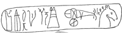

|
|
|
|
There is a good explanation of clauses that start with pri/n at Thrasymachus, pages 268-269, 65 (e). You have read several pri/n clauses in Chapter XXVI, and seen that the mood of the verb in the clause may be infinitive, indicative, subjunctive, or optative. If the main clause contains ou) or mh/, the mood of the verb in the pri/n clause will depend on whether or not the action of this verb actually took place (indicative) and the sequence of tenses (subjunctive or optative) if the action of this verb takes place at an indefinite time.
EXERCISES  XXVI, A. Reread Chapter XXVI carefully and for each of the pri/n clauses, identify the mood and tense of the verb. Translate the clause according to the context.
XXVI, B. Verb review. Identify the mood, tense, voice and first principal part of each of the following verbs from Chapter XXVI.
1. e)tolmw~men 2. e)kku/yaj 3. e)pei/sqhn 4. a)pe/lqontoj 5. o)cu/nwmen 6. a)pe/kruyan 7. h(sqei/j 8. e)qelh/seij 9. w)no/masai 10. kate/pesen Answer Key VERBS ENDING IN -mi A large group of Greek verbs use special sets of endings for the present and second aorist forms. These are very common verbs, and the LAST sets of endings that you will need to memorize as you complete the reading of Thrasymachus (eu}ge!). In Chapters XXVII and XXVIII, you have read many of these common verbs and noticed that they are often combined with prepositional prefixes, such as ti/qhmi, e)piti/qhmi. In order to learn to recognize the forms of these verbs, which may at first look like a very large task, we suggest the following first steps:
Review the Present forms of fhmi/ on page 61 and notice both the endings and the pattern of long vowels (singular) and short vowels (plural). Learn these active endings:
SINGULAR PLURAL mi men j te si asi Memorize the principle parts and the meanings of the following very common verbs:
i(sthmi sth/sw e)/sthsa, e)/sthn e(/sthka e(/stamai e)sta/qhn stand up ti/qhmi qh/sw e!qhka te/qhka e)te/qhn put, place di/dwmi dw//sw e)/dwka de/dwka de/domai e0do/qhn give dei/knumi dei/cw e!deica de/deixa de/deigmai e0dei/xqhn show Look for the patterns in these principal parts, and compare them to the principal parts of lu/w.
As you would expect, the Imperfect tense for these verbs is made from the first principal part, and it is augmented. Look carefully at these forms and identify the patterns that will help you recognize them:
ACTIVE M/P ACTIVE M/P ACTIVE M/P ACTIVE M/P i#sthn i(sta/mhn e)ti/qhn e)tiqe/mhn e)di/doun e)dido/mhn e)dei/knun e)deiknu/mhn i#sthj i#staso e)ti/qhj e)ti/qeso e)di/douj e)di/doso e)dei/knuj e)dei/knuso i#sth i#stato e)ti/qh e)ti/qeto e)di/dou e)di/doto e)dei/knu e)dei/knuto i#stamen i(sta/meqa e)ti/qemen e)tiqe/meqa e)di/domen e)dido/meqa e)dei/knumen e)deiknu/meqa i#state i#stasqe e)ti/qete e)ti/qesqe e)di/dote e)di/dosqe e)dei/knute e)dei/knusqe i#stasan i#stanto e)ti/qesan e)ti/qento e)di/dosan e)di/donto e)dei/knusan e)dei/knunto Study carefully the paradigms on page 87. With a very few exceptions, you will see forms that look very familiar for the different moods of the mi-verbs. The full conjugations start on page 224, in case you need to look for a form that you cannot easily identify.
Finally, learn the principal parts and meaning of the the annoying little mi-verb i#hmi, page 239. This verb most often appears in compounds, such as a)fi/hmi (a)po/ plus i#hmi), and while it follows the patterns of the other mi-verbs, it can be hard to recognize because its stems are so short.
For another look at the -mi verbs, try Professor Helma Dik's HANDOUTS.
EXERCISES XXVII-XXVIII, A.
For the following verbs from Chapters XXVII and XXVIII, give the Mood, Tense, Voice and First Principal Part. You will not be fooled by Number 22 if you look at it in its context (page 89, line 40).
1. ti/qhsi 12. a)fh~ke 2. i#stasqe 13. dw/sein 3. a)fi/esqai 14. sta/j 4. e)pe/qento 15. a)fhso/meqa 5. qe/ntej 16. sunqei/hn 6. e)/dwke 17. u(pe/qhka 7. sta/ntej 18. e)piqei/h 8. e)ne/qesan 19. prodoi~en 9. e@sth 20. a)fi/h| 10. a)fi/hj 21. a)fei/j 11. tiqe/nai 22. e)pi/qonto Answer Key XXVII-XXVIII, B. Verb Review.
Identify the Mood of these verbs:
1. laqoi/men 2. i@qi 3. dei/caj 4. ei)sqw~si 5. a)fie/nai Identify the Voice of these verbs:
1. a)pe/bhsan 2. a)peipw/n 3.dunw/meqa 4. kaqisa/menoj 5. e)cenexqei/j
Identify the Person of these verbs:
1. o(rw~si 2. u(pesxo/mhn 3. e)ka/lese 4. e)/qesan 5. a)fiknou~meqa Answer Key
Back to Contents